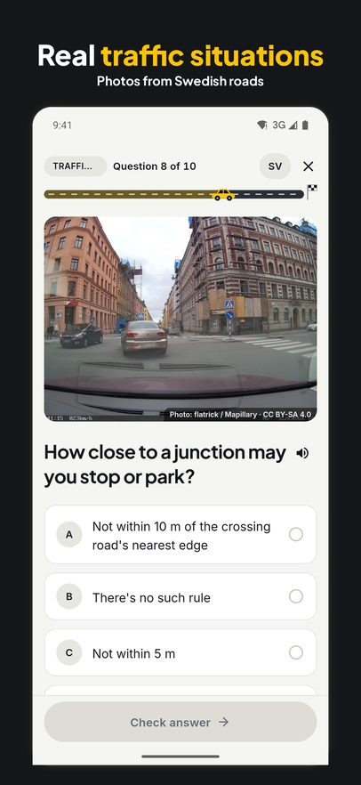
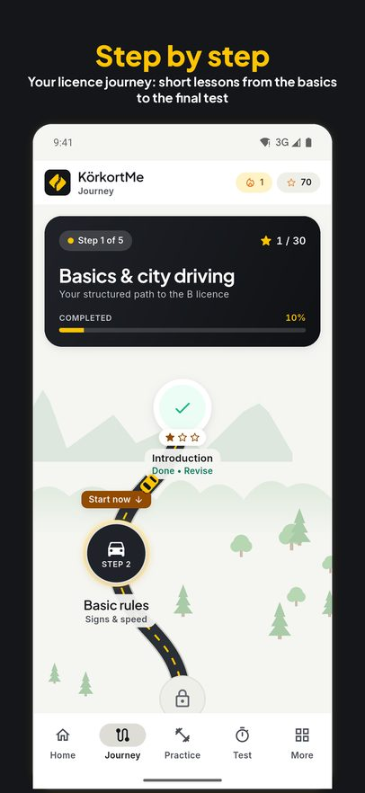
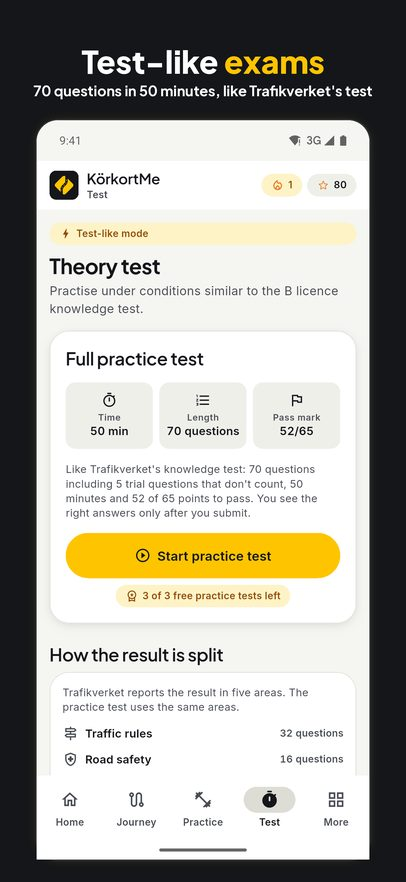
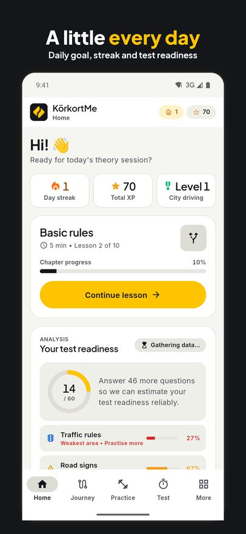
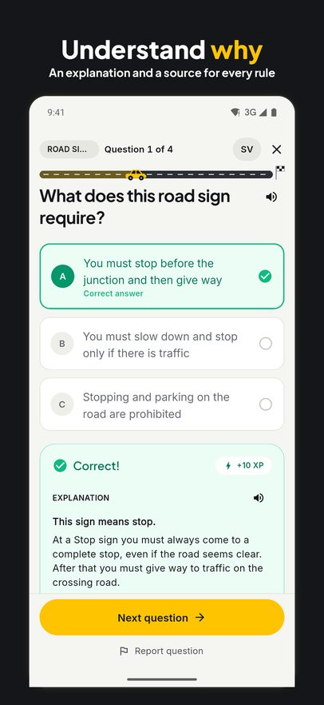
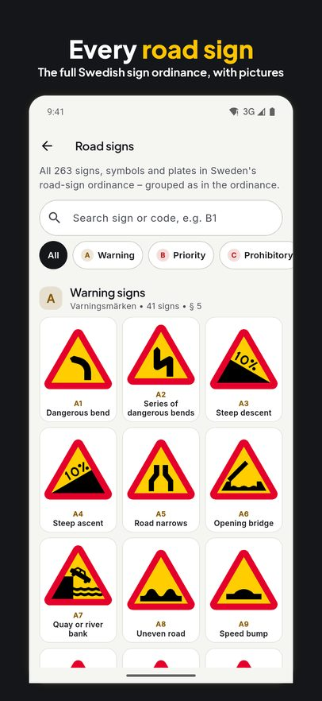

Get your licence.
One question at a time.
KörkortMe is the practice app for the Swedish theory test. Short lessons, real traffic situations, every road sign and realistic practice tests, with a source for every rule. In Swedish and English.


Free to download. Premium unlocks every question and unlimited tests.

Everything you need for the theory test
- Real traffic photosQuestions built around photos from Swedish roads.
- The licence journeyLesson by lesson, from the basics and giving way to the final test.
- Realistic practice tests70 questions in 50 minutes, with results in the same five areas as Trafikverket's test.
- Every road signThe full Swedish road sign ordinance with pictures, explanations and questions.
- Understand whyAfter every answer you get an explanation and the source of the rule.
- No accountYour progress stays on your phone. Swedish and English.
See it in action





Questions and answers
How does the B licence theory test work?
Trafikverket's knowledge test has 70 questions, 5 of which are trial questions that don't count. You have 50 minutes and need 52 correct out of 65 to pass. The practice tests in KörkortMe follow the same format.
Is KörkortMe free?
The app is free to download. Most of the first chapter, the first lesson of every other chapter, every road sign and three practice tests are free. Premium gives you every question and lesson and unlimited practice tests. Premium is bought for a period, from one week to twelve months, and doesn't renew automatically.
Is the app available in English?
Yes. The app is in Swedish and English, and in lessons you can show the questions in Swedish, as in the real test.
Do I need an account?
No. You can start straight away, and your progress is only stored on your phone.
Is KörkortMe connected to Trafikverket?
No. KörkortMe is an independent practice app. You book the real test with Trafikverket.
Start studying today
Download KörkortMe for iPhone or Android.
KörkortMe is an independent practice app and is not affiliated with Trafikverket or Transportstyrelsen. Apple and App Store are trademarks of Apple Inc. Google Play is a trademark of Google LLC.